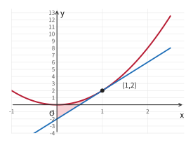
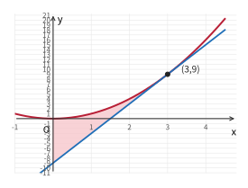
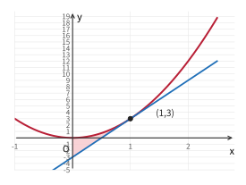

ホーム ＞ 数学II ＞ 積分法（定積分・面積）
別冊練習問題 6 の解答 放物線・接線・y軸で囲まれた面積
(1) 放物線 \(y=2x^2\) 上の点 \((1,2)\) における接線と、この放物線および \(y\) 軸で囲まれた図形の面積を求めよ。
接線
\(f(x)=2x^2\)、\(f'(x)=4x\)。\(x=1\) での接線：
\[y=4(x-1)+2=4 x - 2\]面積の式
放物線が上、接線が下。\(0\leqq x\leqq1\)。
\[\int_0^{1}\{2x^2-(4 x - 2)\}dx=\int_0^{1}2 \left(x - 1\right)^{2}\,dx\]
計算
\[2\int_0^{1}(x-1)^2dx=2\left[\dfrac{(x-1)^3}{3}\right]_0^{1}=\dfrac{2}{3}\]【答案】
\[\dfrac{2}{3}\]答
(2) 放物線 \(y=x^2\) 上の点 \((3,9)\) における接線と、この放物線および \(y\) 軸で囲まれた図形の面積を求めよ。
接線
\(f(x)=x^2\)、\(f'(x)=2x\)。\(x=3\) での接線：
\[y=6(x-3)+9=6 x - 9\]面積の式
放物線が上、接線が下。\(0\leqq x\leqq3\)。
\[\int_0^{3}\{x^2-(6 x - 9)\}dx=\int_0^{3}\left(x - 3\right)^{2}\,dx\]
計算
\[1\int_0^{3}(x-3)^2dx=\left[\dfrac{(x-3)^3}{3}\right]_0^{3}=9\]【答案】
\[9\]答
(3) 放物線 \(y=3x^2\) 上の点 \((1,3)\) における接線と、この放物線および \(y\) 軸で囲まれた図形の面積を求めよ。
接線
\(f(x)=3x^2\)、\(f'(x)=6x\)。\(x=1\) での接線：
\[y=6(x-1)+3=6 x - 3\]面積の式
放物線が上、接線が下。\(0\leqq x\leqq1\)。
\[\int_0^{1}\{3x^2-(6 x - 3)\}dx=\int_0^{1}3 \left(x - 1\right)^{2}\,dx\]
計算
\[3\int_0^{1}(x-1)^2dx=3\left[\dfrac{(x-1)^3}{3}\right]_0^{1}=1\]【答案】
\[1\]答